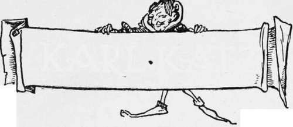

Karl Katz
Description
This section is from the book "Household Tales by Brothers Grimm", by Brothers Grimm. Also available from Amazon: Household Tales by Brothers Grimm.
Karl Katz
In the midst of the Hartz forests there is a high mountain, of which the neighbours tell all sorts of stories: how the goblins and fairies dance on it by night; and how the old Emperor Red-beard holds his court there, and sits on his marble throne, with his long beard sweeping on the ground.
A great many years ago there lived in a village at the foot of this mountain, one Karl Katz. Now Karl was a goatherd, and every morning he drove his flock to feed upon the green spots that are here and there found on the mountain's side. In the evening he sometimes thought it too late to drive his charge home; so he used in such cases to shut it up in a spot amongst the woods, where the old ruined walls of some castle that had long ago been deserted were left standing, and were high enough to form a fold, in which he could count his goats, and let them rest for the night. One evening he found that the prettiest goat of his flock had vanished, soon after they were driven into this fold. He searched everywhere for it in vain; but, to his surprise and delight, when he counted his flock in the morning, what should he see, the first of the flock, but his lost goat! Again and again the same strange thing happened. At last he thought he would watch still more narrowly; and, having looked carefully over the old walls, he found a narrow doorway, through which it seemed that his favourite made her way. Karl followed, and found a path leading downwards through a cleft in the rocks. On he went, scrambling as well as he could, down the side of the rock, and at last came to the mouth of a cave, where he lost sight of his goat. Just then he saw that his faithfnl dog was not with him. He whistled, but no dog was there; and he was therefore forced to go into the cave and try to find his goat by himself
He groped his way for a while, and at last came to a place where a little light found its way in; and there he wondered not a little to find his goat, employing itself very much at its ease in the cavern, in eating corn, which kept dropping from some place over its head. He went up and looked about him, to see where all this corn, that rattled about his ears like a hail-storm, could come from: but all overhead was dark, and he could find no clue to this strange business.
At last, as he stood listening, he thought he heard the neighing and stamping of horses. He listened again; it was plainly so; and after a while he was sure that horses were feeding above him, and that the corn fell from their mangers. What could these horses be, which were thus kept in the clefts of rocks, where none but the goat's foot ever trod ? There must be people of some sort or other living here; and who could they be ? and was it safe to trust himself in such company ? Karl pondered awhile; but his wonder only grew greater and greater, when on a sudden he heard his own name, " Karl Katz ! " echo through the cavern. He turned round, but could see nothing. "Karl Katz!" again sounded sharply in his ears; and soon out came a little dwarfish page, with a highpeaked hat and a scarlet cloak, from a dark corner at one end of the cave.
The dwarf nodded, and beckoned him to follow. Karl thought he should first like to know a little about who it was that thus sought his company. He asked: but the dwarf shook his head, answering not a word, and again beckoned him to follow. He did so; and winding his way through ruins, he soon heard rolling overhead what sounded like peals of thunder, echoing among the rocks: the noise grew louder and louder as he went on, and at last he came to a courtyard surrounded by old ivy-grown walls. The spot seemed to be the bosom of a little valley; above rose on every hand high masses of rock; wide-branching trees threw their arms overhead, so that nothing but a glimmering twilight made its way through; and here, on the cool smooth-shaven turf, Karl saw twelve strange old figures amusing themselves very sedately with a game of nine-pins.
Their dress did not seem altogether strange to Karl, for in the church of the town whither he went every week to market there was an old monument, with figures of queer old knights upon it, dressed in the very same fashion. Not a word fell from any of their lips. They moved about soberly and gravely, each taking his turn at the game; but the oldest of them ordered Karl Katz, by dumb signs, to busy himself in setting up the pins as they knocked them down. At first his knees trembled, as he hardly dared snatch a stolen sidelong glance at the long beards and old-fashioned dresses of the worthy knights; but he soon saw that as each knight played out his game he went to his seat, and there took a hearty draught at a flagon, which the dwarf kept filled, and which sent up the smell of the richest old wine.
Little by little Karl got bolder; and at last he plucked up his heart so far as to beg the dwarf, by signs, to let him, too, take his turn at the flagon. The dwarf gave it him with a grave bow, and Karl thought he never tasted anything half so good before. This gave him new strength for his work; and as often as he flagged at all, he turned to the same kind friend for help in his need.
Which was tired first, he or the knights, Karl never could tell; or whether the wine got the better of his head: but what he knew was, that sleep at last overpowered him, and that when he awoke he found himself stretched out upon the old spot within the walls where he had folded his flock, and saw that the bright sun was high up in the heavens. The same green turf was spread beneath, and the same tottering ivy-clad walls surrounded him. He rubbed his eyes and called his dog; but neither dog nor goat was to be seen; and when he looked about him again, the grass seemed to be longer under his feet than it was yesterday; and trees hung over his head, which he had either never seen before, or had quite forgotten. Shaking his head, and hardly knowing whether he was in his right mind, he got up and stretched himself : somehow or other his joints felt stirfer than they were. "It serves me right," said he; "this comes of sleeping out of one's own bed." Little by little he recollected his evening's sport, and licked his lips as he thought of the charming wine he had taken so much of. "But who," thought he, "can those people be, that come to this odd place to play at nine-pins ?"
Continue to:
Tags
fairy tales, children's stories, brothers grimm, household tales